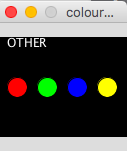

Programming
In this unit students are taught how to write simple code in java processing that produces geometric shapes and animated shapes.
So far I have only learned (quickly) how to properly use the ellipse, line, rect, and triangle commands.
Being that I have some background in coding, everything in this class comes pretty easy to me. Most of the material I already know
so I am not really learning much. Back at home these units will count as elective credits toward my graduation so I think its
cool to be able to go through most of the units with ease. I feel like I am doing great in this unit.

Introduction to Web Design and Development
Last but not the least, my second to favorite unit: web design. This unit teaches students how to code using HTML and stylesheets.
This unit is also fairly easy for me being that I have taken a course similar to it back at home. I am however learning new things
in this course than I did back at home. Animation was never discussed, using containers, ids, and other things of that nature are
all things that I had no knowledge of prior to taking this unit. I find it really interesting how this unit is structured. Back
at my home university, each week's assignment was a part of our website. Here is a link to mine :
Final CIS 375 Assignment
Here is another link to a website that I integrated some html and css coding
Final AED 100 Assignment